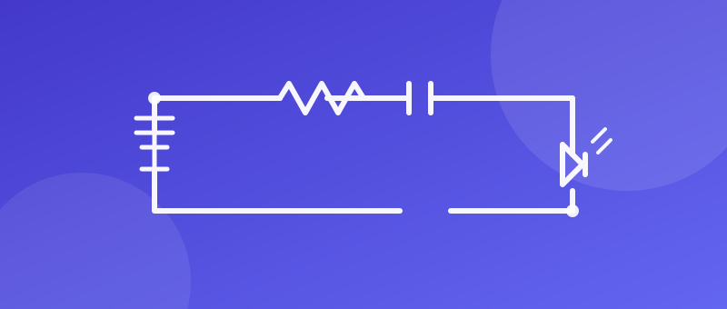

Wired up
Electrical
Schematics, PCB layouts and circuit diagrams — the electronics behind the builds.
Two short paragraphs: which EDA tool you draw in, whether you design for breadboard, perfboard or fabricated PCBs, and what you are learning at the moment — power supplies, signal noise, surface-mount soldering.
Around 80–120 words. What has gone wrong is more interesting than what has gone right.
Drawn
Circuit Schematics
The circuit as a drawing, before it is a board or a breadboard.

What the circuit does, and anything unusual in it — a divider you had to calculate, a part you could not find, a mistake you only saw once it was built.
What the circuit does, and anything unusual in it — a divider you had to calculate, a part you could not find, a mistake you only saw once it was built.
What the circuit does, and anything unusual in it — a divider you had to calculate, a part you could not find, a mistake you only saw once it was built.
Laid out
PCB Designs
Boards routed from those schematics — some fabricated, some not yet.
What the board is for, how many layers, and whether it was fabricated or only designed. Say what you would change on the next revision.
What the board is for, how many layers, and whether it was fabricated or only designed. Say what you would change on the next revision.
Explained
Circuit Diagrams
Diagrams that show how a build is wired, for anyone rebuilding it.
A hand-drawn or software diagram explaining how something works. Good for the wiring behind a build — link across to it on the Builds page.
A hand-drawn or software diagram explaining how something works. Good for the wiring behind a build — link across to it on the Builds page.
A hand-drawn or software diagram explaining how something works. Good for the wiring behind a build — link across to it on the Builds page.